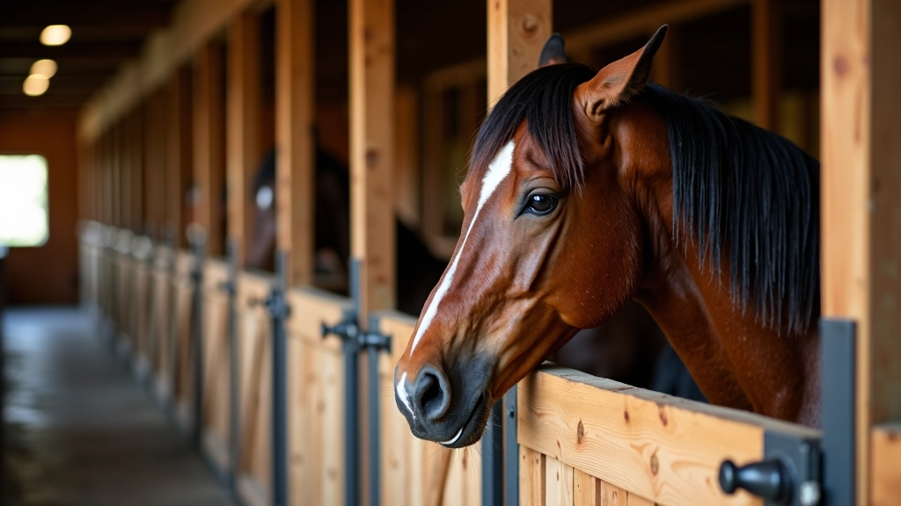
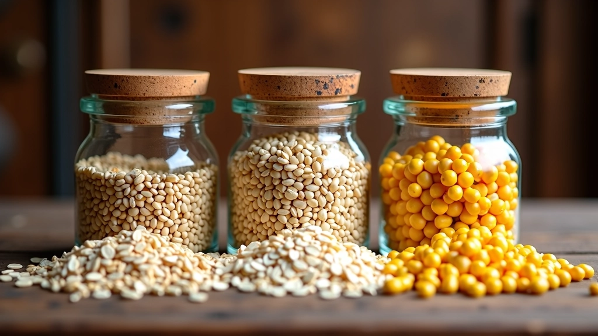
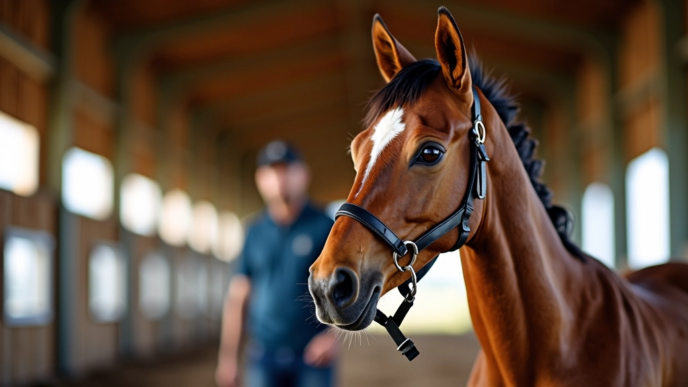
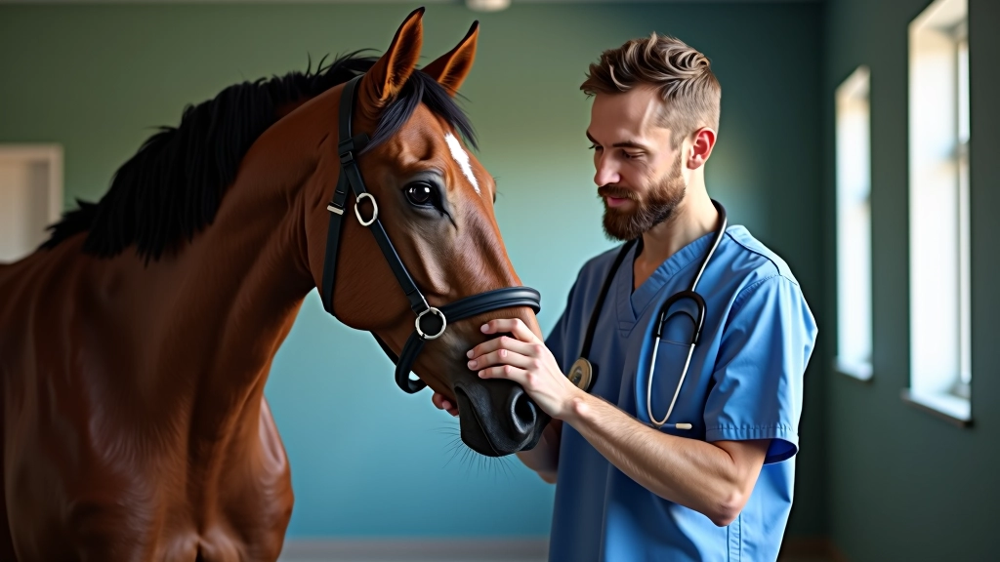

اختيار التبن المناسب لخيلك
التبن عنصر أساسي في غذاء الخيل. نشرح كيفية اختيار التبن عالي الجودة والتحقق من خصائصه.


فريق التحرير والمراجعة
التغذية السليمة هي أساس صحة الخيل. والحبوب تلعب دوراً محورياً في النظام الغذائي، لكن يجب أن تكون النسب صحيحة تماماً. نعم، الخيول تحب الحبوب — لكن الإفراط فيها يسبب مشاكل صحية جسيمة. ستتعلم هنا كيفية حساب النسب الصحيحة بناءً على وزن الخيل وعمره ومستوى نشاطه.
الخيل حيوان آكل للعشب بالطبيعة. معدته صغيرة نسبياً ومصممة للرعي المستمر على كميات صغيرة من الغذاء. لهذا السبب، الحبوب يجب أن تكون مكملاً وليس الغذاء الأساسي. معظم الخيول تحتاج إلى نسبة حبوب تتراوح بين 0.5% إلى 1% من وزنها يومياً.
الخيل الذي يزن 500 كيلوغرام مثلاً، يحتاج إلى 2.5 إلى 5 كيلوغرامات من الحبوب يومياً كحد أقصى. لكن هذا يعتمد على مستوى النشاط والعمل. خيل السباق أو الفرس الحامل ستحتاج إلى نسبة أعلى من الخيل الذي يستخدم للترفيه فقط.


الشعير والذرة والشوفان — كل واحد له خصائصه. الشوفان خفيف على المعدة وغني بالألياف، مثالي للخيول العادية. الشعير يحتوي على طاقة أعلى ولكن أصعب هضماً. الذرة عالية جداً في الطاقة — استخدمها بحذر مع الخيول القليلة النشاط.
في الإسطبلات المحترفة، يستخدمون عادةً خليطاً متوازناً. نسبة 40% شوفان، 30% شعير، 30% ذرة مثلاً. لكن هذا ليس قاعدة صارمة. تختلف النسب حسب احتياجات الخيل الفردية.
لا تزيد الحبوب عن 40% من إجمالي العلف. بقية الحصة يجب أن تكون تبناً عالي الجودة. هذا الفصل بين الكمية والجودة مهم جداً — حبوب قليلة بجودة عالية أفضل من حبوب كثيرة رخيصة.
الخيول الصغيرة بحاجة إلى نسبة حبوب أعلى من البالغة — تحتاج الطاقة لنمو أجسادها. مهرة عمرها 12 شهر قد تحتاج إلى 1.5% من وزنها حبوباً يومياً. خيل بالغ في عمل خفيف قد يحتاج إلى 0.5% فقط.
خيول العمل الثقيل — كالخيول التي تُستخدم للسحب أو الفرسان المحترفين — تحتاج إلى نسب أعلى. قد تصل إلى 1.5% أو حتى 2% من الوزن يومياً. لكن دائماً راقب الخيل نفسه. إذا بدأ يظهر علامات الإجهاد أو المشاكل الهضمية، قلل النسبة فوراً.


إذا أطعمت الخيل حبوباً أكثر من اللازم، ستظهر علامات واضحة. السلوك العصبي والحركات المفرطة — الخيل يبدو "مجنوناً" أحياناً. المعدة الضعيفة والإمساك أو الإسهال المتكرر. بطنه قد ينتفخ أو يظهر عليه عدم الراحة.
بعض الخيول تصاب بمرض يسمى "حمى الحبوب" — وهو التهاب في القدمين ناتج عن الحبوب الزائدة. هذا مؤلم جداً ويمكن أن يؤدي إلى عرج دائم إذا لم يُعالج بسرعة. لذلك، من الأفضل أن تكون حذراً من البداية.
الحبوب ليست الشر — لكنها تحتاج إلى احترام. الخيل يعيش بشكل أفضل عندما يحصل على التوازن الصحيح بين التبن عالي الجودة والحبوب المناسبة. ابدأ بـ 0.5% من وزن الخيل، راقب كيفية استجابته، ثم اضبط من هناك. استشر طبيباً بيطرياً إذا كان لديك خيل مع احتياجات خاصة — لكل حالة قصتها الخاصة.
هذا المقال معلومات تعليمية فقط وليس استشارة بيطرية. يرجى استشارة طبيب بيطري مختص حول احتياجات خيلك الفردية قبل تغيير نظامه الغذائي.
التبن عنصر أساسي في غذاء الخيل. نشرح كيفية اختيار التبن عالي الجودة والتحقق من خصائصه.

إدارة الاسطبل بكفاءة تضمن صحة الخيل ورفاهيته. تعرف على أفضل الممارسات.

الماء النظيف والترطيب المناسب ضروريان لصحة الخيل. تعرف على الكمية الصحيحة.